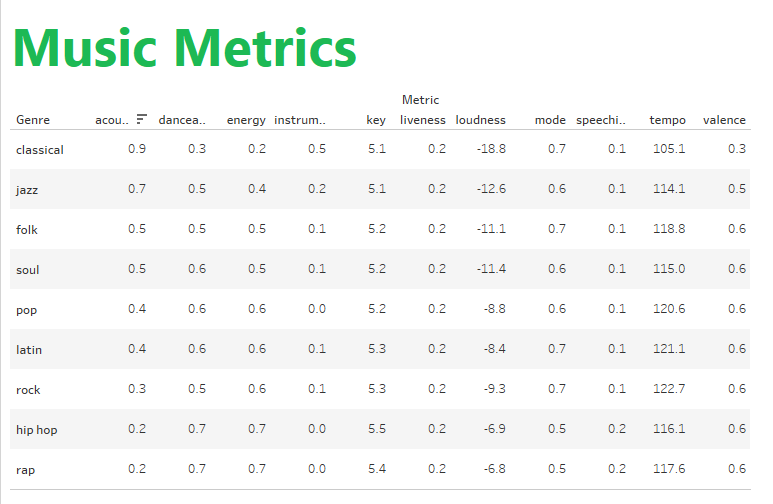
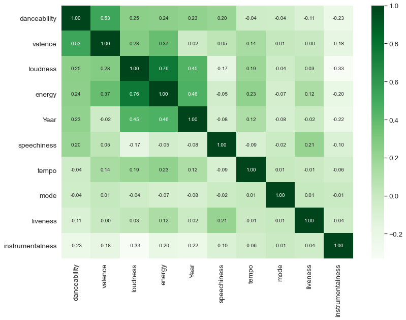
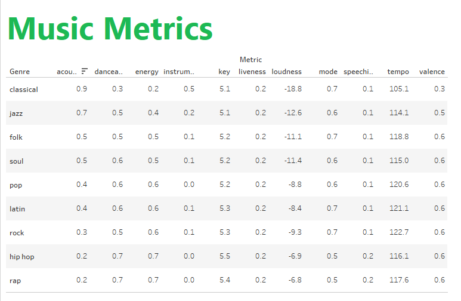
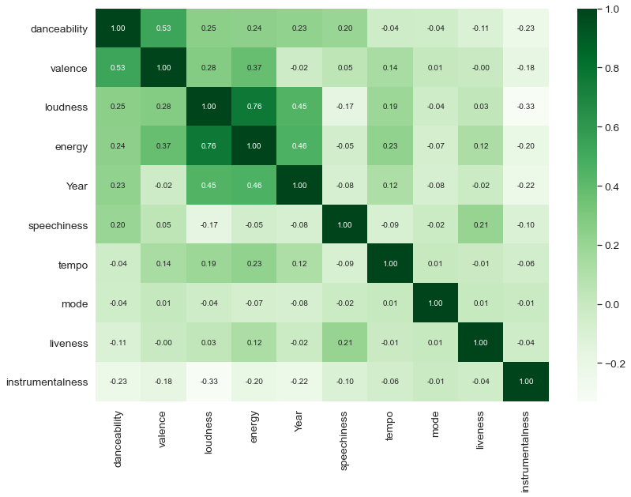

Visualizations
Number of Tracks per Genre by Decade

Number of Tracks Released per Decade

Average Musical Characteristics per Genre
Correlation Coefficient between all 10 Musical Characteristics
Number of Tracks per Genre by Decade
Number of Tracks Released per Decade
Average Musical Characteristics per Genre
Correlation Coefficient between all 10 Musical Characteristics
